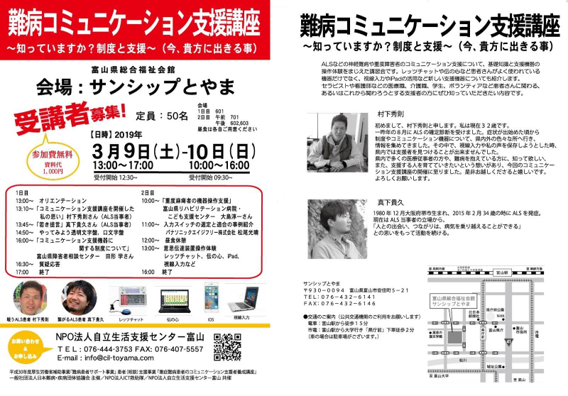

かならずお読みください→
難病コミュニケーション支援講座のご案内

このたびＩＣＴ救助隊の難病コミュニケーション支援講座が富山市で開催されることになりました。
この講座はコミュニケーション支援者の育成目的に介護関係者やヘルパー、ボランティアの人を対象としてこれまで全国の各地で開催されてきました。講座では、透明文字盤の使い方や、「伝の心」などのパソコンソフトの操作体験、オリジナル入力スイッチの工作などを行います。
今回、4年ぶりに富山で開催されることになりました。この分野に興味関心をお持ちの方々はふるってご参加ください。
共催のNPO法人自立生活支援センター富山さんからお話がありお手伝いすることになりました。よろしくお願いいたします。
難病コミュニケーション支援講座
- 日 2019年3月9日（土）、10日（日）
- 時 9日 13:00～17時、10日 10時から16時
- 所 富山県総合福祉会館 サンシップとやま
- 9日 601号室
- 10日 午前701号室 午後602，603号室
- 〒930-0094 富山県富山市安住町5-21
- TEL(076)432-6141 FAX(076)432-6146
- http://www.wel.pref.toyama.jp/
- 定員 50名
- 参加費 無料 資料代1000円
- 問い合わせと参加申込先
- NPO法人自立生活支援センター富山
- TEL 076-444-3753 FAX 076-407-5557
- info@cil-toyama.com
- http://www1.odn.ne.jp/~adu40180/
詳しくは
こちら
の資料をご覧ください
参考URL
2019/1/25 公開
研究企画課リハ工学科にもどる